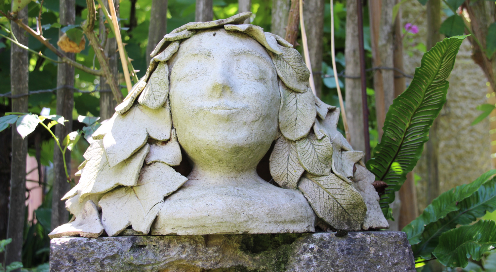

Über mich
Herzlich Willkommen! Schön, dass du auf meine Website gefunden hast.
Töpfern und die Arbeit mit dem Material Ton begleiten mich bereits seit 40 Jahren. Über die Jahre hinweg habe ich viele Methoden und Arbeitsweisen kennengelernt und meinen ganz eigenen Stil entwickelt.
Bei der letztendlichen Form meiner Figuren, lasse ich gerne meine Fantasie spielen.
Inspiriert werde ich von der Natur und dem was darin zu finden ist. Bunte Beeren, grünes Blattwerk, schnatternde Gänse und fröhliche Schweine sind dabei genauso vertreten, wie Wasser spuckende Frösche und dicke Amseln. Andere Inspirationen finde ich in Narrationen, Geschichten und Märchen. Dies lässt sich vor allem bei meinen Blumenmädchen und kleinen Königen erkennen.
Die Welt ist bunt!

Im Alltag begegnen mir immer wieder Formen, Muster und Oberflächen, an denen ich mich ebenfalls für meine Arbeiten bediene. Manchmal sind es gehäkelte Gardinen, die Formgebend sind, manchmal auch die Maserung von Blättern oder Blüten. Hier spielt mein Garten für mich eine wichtige Rolle. Die Idee für die Motive finde ich hier und andersherum, die Idee etwas für eine (noch) leere Stelle zu töpfern entsteht ebenfalls hier. Es braucht also manchmal beides: Motiv und ein freies Plätzchen.
Inspirationen finde ich aber auch durch meine Familie und Freunde, die mir immer wieder neue Flausen in den Kopf setzen und mich in meiner Arbeit bestärken.
Es ist aber nicht nur das Endprodukt, über das ich mich am Ende freue. Auch die Arbeit selbst hat für mich einen hohen Stellenwert. Töpfern bringt einen meditativen Aspekt mit, über den ich sehr dankbar bin. Im hektischen Alltag nehme ich mir gerne die Zeit dafür, mit Ton neue Formen zu kreieren. Ton ist ein sehr dankbares und strapazierbares Material, dass sich im nicht gebrannten Zustand noch lange bearbeiten lässt.
Alle meine Objekte stecken voller Liebe, Leidenschaft und Kreativität. In meinem Töpferstüble findest du eine kleine Auswahl an Groß- und Kleinigkeiten. Viel Spaß beim Stöbern!